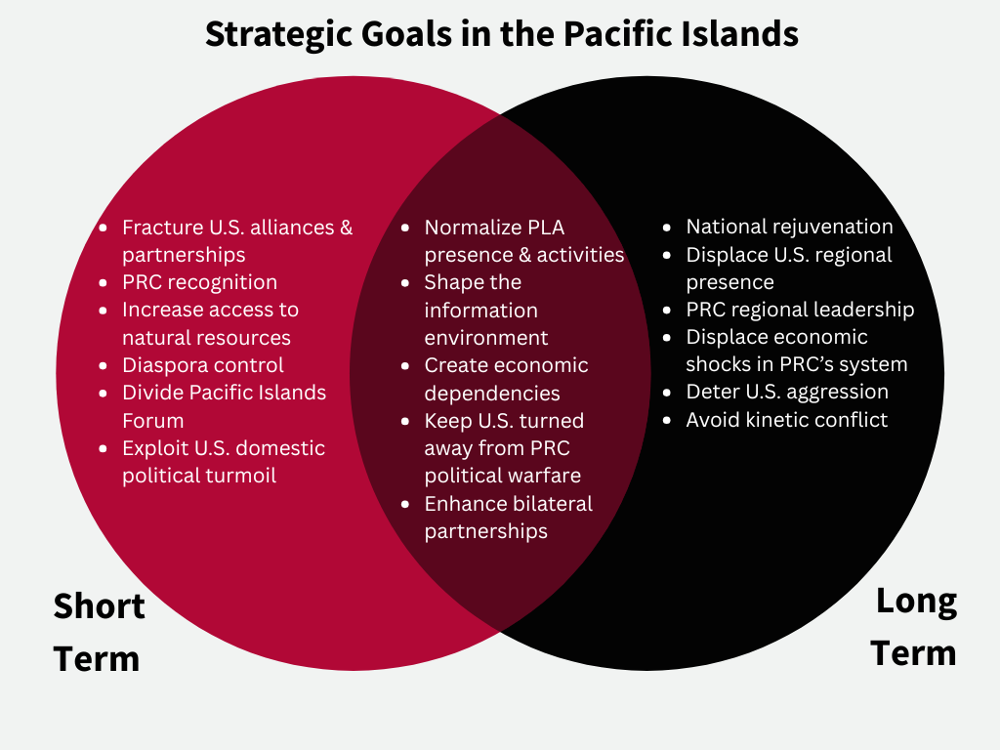

I. Executive Summary
This report synthesizes findings from a strategic red team exercise examining PRC objectives and decision-making in the Pacific Islands region. The exercise consisted of expert participants roleplaying PRC officials to assess potential responses to four regional scenarios. Through structured analysis and scenario-based deliberation, the exercise revealed consistent patterns in how the PRC approaches the Pacific Islands as a theater of strategic competition.
Key Findings
- Strategic Opportunism: The PRC employs a dual-track approach in the Pacific Islands, seeking to simultaneously diminish U.S. influence, fracture alliances, create economic dependencies, and normalize PLA presence in the region. Beijing views the Pacific Islands not as an end in themselves but as a means to reshape the broader Indo-Pacific strategic environment.
- Political Warfare Predominance: The exercise identified one firm U.S. red line—direct threats to military assets. Beijing believes it can conduct unrestricted political and economic warfare below this threshold without triggering a decisive American response. This includes intelligence operations, disinformation campaigns, economic coercion, and diplomatic subversion.
- Narrative Control: Across all four scenarios, the PRC prioritized maintaining the appearance of a “benign development partner” while pursuing strategic objectives that fundamentally undermine Western interests and regional sovereignty. The gap between rhetoric and reality represents both a vulnerability and an opportunity for Western counter-strategies.
- Exploiting Strategic Flexibility: China consistently seeks to benefit from multiple possible outcomes, including regional instability. Unlike Western powers that generally favor the status quo, the PRC maintains the flexibility to capitalize on chaos, crisis, and political upheaval across the Pacific Islands.
Scenario-Based Insights
- Kanton Island Lease, 2029: The PRC would avoid establishing a formal military base, instead constructing dual-use infrastructure that serves strategic purposes under the guise of civilian development. This approach minimizes international backlash while steadily expanding China’s military reach into the Central Pacific.
- Deep-Sea Mining Competition, 2027: Beijing would exploit U.S. bypassing of international norms to position itself as the defender of multilateral institutions and Pacific Island sovereignty, turning American unilateralism into a strategic advantage for Chinese narrative warfare.
- Marshall Islands Diplomatic Switch, 2028: The PRC would capitalize on favorable political winds to engineer a diplomatic realignment, using a combination of personal inducements, economic incentives, and narrative warfare centered on the legacy of U.S. nuclear testing to detach the Marshall Islands from both Taiwan and Washington.
- Bougainville Crisis, 2027: China would posture to benefit regardless of whether the crisis results in Bougainville’s independence or its continued integration with PNG. By positioning itself as a responsible regional actor while Western powers remain tied to the status quo, Beijing gains flexibility that its competitors lack.
Recommendations for Western Responses
-
Counter the “Benign Development Partner” Narrative.
Focus on specific instances where Chinese promises have not materialized or have come with hidden strings attached. Support independent media throughout the Pacific Islands to ensure that local populations have access to accurate information about the true costs and conditions of Chinese investment. Increase the visibility of Western development projects and their tangible benefits to Pacific Island communities. The most effective counter-narrative is not anti-China rhetoric but rather demonstrable proof that Western partnerships deliver genuine, unconditional development outcomes.
-
Develop Comprehensive Counter-Political Warfare Strategies.
Invest in building personal relationships with Pacific Island leaders and communities through consistent presence and engagement. Embrace the “last three feet of diplomacy”—the personal, face-to-face interactions that build trust and loyalty over time. Western diplomatic strategy must move beyond periodic high-level visits and institutional engagement to establish a persistent, relationship-driven presence that can compete with China’s patient, long-term approach to building political influence.
-
Analyze PRC Maneuvers Through the Lens of Domestic Politics.
Analyze strategic maneuvers with full consideration for the PRC’s domestic politics and the CCP’s internal dynamics. Beijing’s actions in the Pacific Islands serve not only strategic objectives but also the domestic legitimacy of the CCP and Xi Jinping personally. Infrastructure projects and diplomatic achievements in the region function as propaganda tools for domestic consumption. Understanding this dual purpose helps predict which actions Beijing will prioritize and where it may be willing to accept setbacks.
-
Anticipate How the PRC Benefits from Chaos and Instability.
Develop early warning systems for regional crises that the PRC might exploit. Pre-position diplomatic and development responses to rapidly deploy when instability emerges. Maintain constant engagement with Pacific Island governments to ensure that Western partners are the first call during a crisis, not Beijing. The PRC’s ability to benefit from apparent chaos demands that Western strategy shift from reactive crisis management to proactive engagement that anticipates and addresses the conditions that create opportunities for Chinese exploitation.
II. Introduction
The Imperative
Great power competition in the Pacific Islands region has intensified dramatically in recent years, transforming what was once considered a strategic backwater into a pivot region of global strategy. The People’s Republic of China has pursued a long-term strategy to expand its influence across the Pacific, leveraging economic investment, diplomatic engagement, and security cooperation to reshape the regional order. To effectively counter these efforts, the United States and its allies must develop forward-looking, flexible strategies grounded in a deep understanding of how Beijing perceives the region and makes decisions within it.
Exercise Background
The PRC’s strategic objectives in the Pacific Islands encompass military, diplomatic, intelligence, and economic dimensions. Central among these is the isolation of Taiwan from its remaining diplomatic partners in the region and the securing of access to critical natural resources, including deep-sea minerals. China’s diplomatic footprint in the Pacific has tripled since 2015, marked by Xi Jinping’s visits to Fiji in 2014 and Papua New Guinea in 2018, and the expansion of the Belt and Road Initiative across the region. Recent developments—including the Cook Islands deep-sea mining arrangements, the Solomon Islands security pact, and police cooperation agreements with Fiji, Kiribati, and Vanuatu—underscore the breadth and depth of Beijing’s regional engagement.
Objectives
The purpose of this Red Team exercise was to systematically identify vulnerabilities, gaps, and blind spots in current Western strategic posture regarding PRC activities in the Pacific Islands. The exercise sought to develop strategic empathy—the ability to understand and anticipate an adversary’s decision-making processes. Specifically, the exercise explored:
- PRC perceptions of its interests and strategic position in the Pacific Islands region.
- PRC understandings of Western vulnerabilities and how to exploit them.
- PRC red lines and thresholds for escalation in the Pacific context.
- PRC strategic decision-making frameworks when confronted with regional scenarios that present both risks and opportunities.
The development of strategic empathy is essential for crafting effective counter-strategies. By understanding how Beijing thinks about the Pacific Islands, Western policymakers can anticipate Chinese actions, identify vulnerabilities in Chinese strategy, and develop responses that address the root causes of Chinese strategic success rather than merely reacting to its symptoms.
III. Exercise & Report Roadmap
Red Team analysis challenges conventional thinking by having analysts adopt the perspective of an adversary or competitor. This structured analytic technique requires analysts to shift from observing opponents to becoming actors who think and respond as the adversary would do so. The method proves especially valuable when facing counterparts with different cultures, values, or decision-making processes.
Red Teams immerse themselves in their assigned roles, producing authentic products like policy papers and strategic recommendations that the adversary might create.
The technique helps organizations identify blind spots, test assumptions about adversary behavior, and develop more robust strategies. By forcing analysis to see situations through opponents’ eyes, Red Team analysis reveals vulnerabilities and alternative courses of action that might otherwise go unrecognized.
Eight expert participants adopted the Red Team role of PRC military and diplomatic officials, foreign policy strategists, and technical advisors. Individual Red Team members did not play specific roles but rather conferred in “committee” style to represent views across PRC statecraft domains. ASPI USA employed Chatham House Rule to encourage open speculation and candid discussion among the participants.
The facilitator asked participants to determine “not just what the PRC should do, but why it should do it.” This emphasis on reasoning and motivation, rather than merely actions, ensured that the exercise captured the strategic logic underlying Chinese decision-making, not just its outputs.
Four scenarios were presented to the participants as fictional policy memos addressed to Wang Yi, Director of the Central Foreign Affairs Commission. Each scenario was designed to test a different dimension of PRC strategic engagement in the Pacific Islands: military infrastructure development, resource competition, diplomatic realignment, and crisis exploitation. The memos that follow represent the synthesized recommendations of the Red Team for each scenario.
The final section of this report is ASPI USA’s own analysis of the exercise findings, drawing lessons for the “blue team”—the United States and its allies and partners in the Pacific Islands region.
IV. Directive & Baseline Strategy
Before addressing the individual scenarios, the Red Team established a baseline understanding of PRC strategic objectives in the Pacific Islands. The committee identified goals across three overlapping time horizons.

Long-Term Goals
In the long term, the PRC aims to become the region’s primary partner, displacing U.S. regional presence and influence. Beijing seeks to deter U.S. aggression and military posturing in the Pacific while avoiding kinetic warfare that could disrupt economic development and invite international condemnation. The endgame is a Pacific Islands region that looks to Beijing, not Washington, as its principal strategic partner and security guarantor.
Short-Term Goals
In the near term, the PRC prioritizes diminishing U.S. influence throughout the Pacific Islands and fracturing existing alliances and partnerships, particularly targeting the Compact of Free Association (COFA) states. Beijing also seeks to exploit U.S. domestic political turmoil to undermine American credibility, divide the Pacific Islands Forum to prevent collective resistance, increase the number of states granting PRC diplomatic recognition at the expense of Taiwan, and gain access to the region’s natural resources, including deep-sea minerals and fisheries.
Overlapping Goals
Across both time horizons, several objectives persist: building and deepening partnerships with Pacific Island governments, controlling the regional narrative to present China as a beneficial and reliable partner, evading U.S. strategic attention and response, normalizing PLA presence through dual-use infrastructure and security cooperation, shaping the regional information environment to favor PRC interests, and creating economic dependencies that give Beijing leverage over Pacific Island decision-making.
V. Scenarios & Red Team Recommendations
Scenario 1: Kanton Island Lease
FROM: Oceania Leading Small Group
DATE: 24 June 2029
SUBJ: Kanton Island Lease
The PRC has successfully consolidated political influence in Kiribati, forging a 99-year lease on Kanton Island in the Phoenix Islands chain. This strategic acquisition places Chinese-controlled territory approximately 1,900 miles from Pearl Harbor and positions the PRC to project influence across the Central Pacific. The committee has assessed the strategic implications and recommends a course of action that maximizes long-term benefit while minimizing the risk of a destabilizing Western response.
By 2028, Western relations with Kiribati had soured considerably. The erosion of judicial independence, combined with the government’s increasing authoritarian tendencies, created friction with traditional democratic partners. PRC law enforcement trainers have been embedded within Kiribati’s security apparatus, deepening institutional ties. The culmination of these trends was the negotiation of a 99-year lease on Kanton Island, providing the PRC with a sovereign foothold in the heart of the Pacific.
The committee assessed that Chinese military strategy would benefit significantly from a forward base on Kanton Island. At approximately 1,900 miles from Pearl Harbor, the island occupies a position of considerable strategic value for intelligence collection, maritime domain awareness, and potential power projection. However, overt militarization of the island risks triggering a sharp backlash from the United States, Australia, and regional partners, potentially unraveling years of careful diplomatic cultivation.
The committee therefore recommends a dual-use infrastructure approach. By constructing facilities that serve ostensibly civilian purposes—port facilities, airstrip improvements, research stations, communications infrastructure—while maintaining the latent capability for military conversion, the PRC can steadily expand its strategic footprint without crossing Western red lines. This approach mirrors successful precedents in the South China Sea and Djibouti.
- Promote Strategic Infrastructure: Develop Kanton Island through dual-use infrastructure projects including port facilities capable of accommodating naval vessels, an extended airstrip suitable for military transport aircraft, and advanced communications and surveillance equipment. All projects should be framed as economic development and climate research initiatives.
- Conduct Intelligence Operations: Establish a signals intelligence and maritime surveillance capability on Kanton Island under the cover of oceanographic research. This facility would provide valuable intelligence on U.S. military movements between Hawaii and the Western Pacific.
- Provide Regional Assistance: Use Kanton Island as a hub for disaster relief and humanitarian assistance operations throughout the Central Pacific. This positions the PRC as a responsible regional actor and builds goodwill while normalizing a Chinese operational presence in the area.
- Ensure Favorable Leadership: Continue to support political leaders in Kiribati who are positively disposed toward the PRC. Invest in political relationship-building, educational exchanges, and economic incentives that reinforce the value of the Kanton Island lease and broader Chinese partnership.
- Consider Military Alternatives: While avoiding overt militarization, develop contingency plans for the rapid conversion of dual-use facilities to military purposes in the event of a regional crisis or escalation. Pre-position the logistical and engineering capabilities necessary to execute such a conversion within a compressed timeline.
Scenario 2: Deep-Sea Mining Competition
FROM: Oceania Leading Small Group
DATE: 19 October 2027
SUBJ: Response to U.S. Push into Deep-Sea Mining*
The United States has begun pressuring Pacific Island Countries into bilateral deep-sea mining (DSM) agreements that bypass the International Seabed Authority (ISA) and established multilateral frameworks. This unilateral American approach presents both challenges and opportunities for PRC strategic interests. The committee assesses that China can turn this development to its advantage by positioning itself as the defender of international law and Pacific Island sovereignty.
The United States has prioritized critical mineral supply chains as a matter of national security, pursuing bilateral DSM agreements with the Cook Islands, Kiribati, Tonga, the Marshall Islands, Papua New Guinea, Vanuatu, and Nauru. These agreements bypass the ISA framework and represent a significant departure from multilateral norms. As President Xi Jinping has noted, the deep sea contains mineral treasures of immense strategic value. China currently holds the most ISA exploration contracts of any nation, and the committee assessed that France, through its Pacific territories, represents a more immediate competitor than the United States in the near term.
In the short term, U.S. attempts to secure bilateral DSM agreements do not fundamentally threaten PRC interests. China’s dominant position within the ISA framework and its existing deep-sea mining technological capabilities provide a strong foundation. However, the U.S. approach of bypassing international norms presents a significant narrative opportunity. By championing the ISA framework and multilateral governance of deep-sea resources, China can position itself as the responsible defender of the rules-based order—precisely the language that Western nations have used to criticize Beijing.
The committee further noted that U.S. bilateral agreements may generate resentment among Pacific Island populations concerned about environmental impacts and the equitable distribution of mining revenues. China should be prepared to amplify these concerns through media, civil society, and diplomatic channels.
- Controlling the Narrative: Position the PRC as the champion of international law, multilateral governance, and Pacific Island environmental concerns. Highlight U.S. hypocrisy in bypassing the very international institutions that Washington claims to defend. Amplify Pacific Island voices critical of bilateral DSM agreements through media partnerships and civil society support.
- Exchange Diplomacy & Confucius Institutes: Expand educational and cultural exchange programs throughout the Pacific Islands, with a particular focus on marine science and resource management. Confucius Institutes and scholarship programs should cultivate a generation of Pacific Island leaders who view China as a partner in sustainable development rather than a rival for their resources.
- Fracturing U.S. Relationships: Exploit divisions between Pacific Island countries that have signed bilateral agreements with the U.S. and those that have not. Provide preferential economic treatment to holdouts as an incentive for resisting American pressure. Highlight the contrast between U.S. extractive agreements and Chinese development investment.
- Biding Time: Maintain China’s dominant position within the ISA while allowing U.S. bilateral agreements to generate their own friction and backlash. As environmental and equity concerns mount, position China to offer an alternative framework that Pacific Island countries find more attractive than the American approach.
* This scenario was presented prior to similar developments by the second Trump administration.
Scenario 3: Marshall Islands Diplomatic Switch
FROM: Oceania Leading Small Group
DATE: 14 January 2028
SUBJ: Response to New Presidency in the Marshall Islands
The Republic of the Marshall Islands (RMI) has elected a new president who is positively disposed towards the PRC. The committee recommends seizing this opportunity to secure diplomatic recognition from the RMI and, in the long run, engineer a fundamental break in the Marshall Islands’ relationship with the United States. The new president’s stated policy of being “friends to all and enemies to none” and growing COFA skepticism within the Marshallese population create favorable conditions for PRC engagement.
A new coalition won a majority in the Nitijela in 2027 and elected a president whose foreign policy orientation represents a significant departure from previous administrations. The new leadership has expressed skepticism about the value of the COFA relationship with the United States and has signaled openness to diversifying the Marshall Islands’ diplomatic partnerships. Growing frustration with the pace and conditions of U.S. economic support, combined with lingering resentment over the legacy of American nuclear testing in the Marshall Islands, has created a political environment receptive to PRC overtures.
The committee identified a strategic opportunity to remove one of the last diplomatic holdouts for the Nationalists in Taipei. The Marshall Islands represents one of Taiwan’s remaining diplomatic partners, and its defection would deal a significant blow to Taiwan’s international standing. However, the COFA relationship represents both an exploitation opportunity and an obstacle. While COFA skepticism creates openings for Chinese engagement, the deep institutional ties between the RMI and the United States—including military access rights and significant financial transfers—cannot be easily displaced.
The committee assessed that the endgame is not merely diplomatic recognition but a fundamental political shift in the Marshall Islands away from the United States and toward the PRC. This requires a patient, multi-pronged approach that addresses Marshallese economic needs, political aspirations, and historical grievances simultaneously.
- Personnel Inducements: Cultivate personal relationships with the new president and key members of the governing coalition through private visits, educational opportunities for their families, and discreet economic incentives. Personal relationships with political leaders are the foundation of PRC influence throughout the Pacific.
- Outbid Taiwan: Offer economic and development packages that significantly exceed what Taiwan can provide. This includes infrastructure investment, budget support, and scholarship programs. The goal is to make the economic case for diplomatic switch so compelling that it overcomes domestic political resistance.
- Narrative Warfare About Nuclear Testing Legacy: Amplify and support Marshallese grievances regarding the legacy of U.S. nuclear testing. Frame the United States as a power that irradiated the Marshall Islands and then failed to provide adequate compensation or remediation. Position the PRC as a partner that respects Marshallese sovereignty and offers development without the baggage of colonial exploitation.
- Displace America: Pursue a long-term strategy of displacing American institutional presence in the Marshall Islands. This includes offering alternatives to U.S.-funded programs, establishing Chinese economic and cultural institutions, and gradually reducing Marshallese dependence on COFA provisions by providing substitute sources of revenue and services.
Scenario 4: Bougainville Crisis
FROM: Oceania Leading Small Group
DATE: 1 December 2027
SUBJ: Crisis in Bougainville
Tensions between the Autonomous Region of Bougainville and Papua New Guinea have escalated toward open conflict following the PNG parliament’s failure to address the results of Bougainville’s independence referendum. The committee assesses that China stands to benefit from either outcome of this crisis—whether Bougainville achieves independence or remains within PNG—and recommends a strategy that positions the PRC to capitalize on developments regardless of how the situation unfolds.
In December 2027, tensions escalated sharply after the PNG parliament failed to address Bougainville’s independence vote by the 1 September deadline established in the Bougainville Peace Agreement. Military mobilization on both sides has raised the specter of a return to the armed conflict that devastated the region in the 1990s. The crisis has attracted international attention and created opportunities for external actors to shape the outcome.
The PRC is positioned to benefit regardless of the outcome. Western powers—particularly Australia and the United States—generally favor the status quo of Bougainville remaining within PNG, which limits their flexibility to engage with all parties. China, by contrast, has greater strategic flexibility and can engage with both the PNG government and Bougainville independence leaders without the same constraints.
The crisis also presents an opportunity to enhance PRC regional leadership by demonstrating a capacity for crisis management and peacekeeping. Furthermore, the Bougainville situation has potential spillover implications for West Papua and New Caledonia, where similar independence aspirations could create additional opportunities for PRC engagement.
- A Responsible Approach: Advocate for a PRC-led or PRC-supported peacekeeping effort in Bougainville. Position China as a neutral mediator that respects the will of the Bougainvillean people while maintaining constructive relations with PNG. A Chinese role in peacekeeping would normalize PLA and PRC security presence in Melanesia and establish a precedent for Chinese security engagement in the Pacific.
- Regional Security: Reinforce the Solomon Islands police cooperation framework and strengthen ties with the Melanesian Spearhead Group. Use the Bougainville crisis to demonstrate the value of Chinese security partnerships and to position the PRC as a capable and willing provider of regional security assistance, in contrast to Western partners who are constrained by their preference for the status quo.
- Fostering Prosperity: Regardless of the political outcome, position Chinese enterprises to participate in the restart of the Panguna mine, one of the world’s largest copper and gold deposits. The economic reconstruction of Bougainville—whether as an independent state or an autonomous region—will require massive investment, and the PRC should ensure that Chinese companies are at the front of the line.
VI. Analysis & Lessons for the “Blue Team”
The following analysis represents ASPI USA’s assessment of the exercise findings and their implications for Western strategy in the Pacific Islands region.
1. Benign Development Partner?
Across all four scenarios, the Red Team consistently prioritized maintaining the PRC’s image as a “benign development partner”—a nation that offers infrastructure, investment, and assistance without the political conditions attached to Western aid. This narrative is central to Chinese strategy in the Pacific Islands and serves as the primary vehicle for expanding influence while minimizing resistance.
The PRC actively manipulates the Pacific information environment to sustain this narrative. State media, social media platforms, and co-opted local outlets amplify stories of Chinese generosity while suppressing coverage of debt conditions, labor practices, environmental impacts, and political interference. The committee’s consistent emphasis on narrative control confirms that the “benign development partner” image is not incidental but rather a deliberately constructed and maintained strategic asset.
The United States and its allies must increase the visibility of their own development activities throughout the Pacific Islands. Too often, Western development projects are delivered through multilateral institutions or NGOs with little attribution to the partner governments that fund them. Supporting independent media in the Pacific Islands is equally critical, ensuring that local journalists have the resources and protections to report accurately on both Chinese and Western engagement in the region.
2. Unrestricted Political Warfare
The exercise identified only one firm Western red line that the PRC consistently respected: direct threats to U.S. military assets and installations. Below this threshold, Beijing believes it has a free hand to conduct unrestricted political warfare, encompassing intelligence operations, disinformation campaigns, economic coercion, diplomatic subversion, and the cultivation of political elites sympathetic to PRC interests.
This finding carries profound implications for Western strategy. The PRC’s approach mirrors the classical Chinese strategic concept of winning without fighting—achieving strategic objectives through non-kinetic means that fall below the threshold of a military response. The breadth of Chinese political warfare activities in the Pacific Islands—from police cooperation agreements to media partnerships to educational exchanges—represents a comprehensive campaign to reshape the regional political landscape in China’s favor.
Western counter-strategies must address this full spectrum of political warfare. Military deterrence, while necessary, is insufficient. The United States and its allies must develop their own capabilities for political warfare competition, including enhanced intelligence sharing with Pacific Island partners, media literacy programs, counter-corruption initiatives, and sustained diplomatic engagement that builds resilience against Chinese influence operations.
3. Show Your Strength or Bide Your Time?
The exercise revealed an internal tension within the Red Team between two strategic orientations. One group of participants favored a forward-leaning, assertive approach—the “strong men”—advocating for bold moves to seize strategic opportunities as they arise. The other group favored a more cautious, patient approach aligned with Deng Xiaoping’s famous dictum to “hide your strength and bide your time”—the “restrainers.”
This tension mirrors a genuine debate within the CCP about the pace and assertiveness of Chinese foreign policy. Under Xi Jinping, the balance has shifted toward the “strong men” camp, with Xi having consolidated power with loyalists who share his more assertive vision. However, the “restrainers” remain influential, particularly when aggressive moves risk provoking a Western backlash that could undermine long-term objectives.
For Western strategists, this internal tension represents both a challenge and an opportunity. By raising the costs of aggressive Chinese behavior in the Pacific Islands—through diplomatic consequences, economic penalties, and increased Western presence—the “restrainer” camp within the CCP can be empowered. Conversely, Western inaction or disengagement empowers the “strong men” by confirming that assertive moves carry no consequences.
4. All Under Heaven is in Chaos, and the Situation is Excellent
Mao Zedong’s famous aphorism captures a strategic orientation that was consistently evident throughout the exercise. Unlike Western powers, which generally seek stability and the preservation of the status quo, the PRC is positioned to benefit from chaos, crisis, and instability in the Pacific Islands region.
The Bougainville scenario illustrated this dynamic most clearly. While Australia and the United States were constrained by their commitment to PNG’s territorial integrity and the existing political framework, China maintained the flexibility to engage with all parties and to benefit from any outcome. Similarly, the Solomon Islands police deployment, divisions within the Pacific Islands Forum over Taiwan recognition, and the erosion of democratic institutions in several Pacific Island states all create conditions that favor Chinese strategic objectives.
Western strategy must account for the PRC’s ability to thrive in chaotic environments. This means investing in the stability and resilience of Pacific Island institutions, providing rapid-response capabilities for regional crises, and maintaining the kind of persistent, relationship-driven engagement that ensures Western partners are the first call when instability emerges.
VII. Conclusion
The Pacific Islands Red Team exercise revealed a PRC strategy characterized by a dual-track approach: diminishing U.S. influence in the short term while positioning China as the region’s primary partner over the long term. Across all four scenarios, the Red Team demonstrated remarkable strategic flexibility, adapting its approach to exploit the specific conditions of each situation while maintaining consistency in its overarching objectives.
The “benign development partner” narrative emerged as the linchpin of PRC strategy in the Pacific Islands. This carefully constructed image enables Beijing to expand its influence while minimizing the resistance that more overtly aggressive behavior would provoke. The exercise identified only one firm American red line—direct threats to U.S. military assets—below which Beijing believes it can operate with relative impunity in the political warfare domain.
For Western policymakers, the exercise yields several actionable lessons. Counter-strategy should include the development of comprehensive counter-political warfare capabilities that address the full spectrum of Chinese influence operations. Supporting independent media throughout the Pacific Islands is essential for undermining the “benign development partner” narrative with factual reporting. Anticipating how the PRC benefits from chaos and instability must become a core element of Western strategic planning, with pre-positioned responses and early warning systems for regional crises.
Analyzing PRC actions through the lens of domestic politics—understanding how Pacific Islands engagement serves the CCP’s internal legitimacy requirements—provides deeper insight into Chinese decision-making and priorities. Finally, strengthening regional institutions, particularly the Pacific Islands Forum and bilateral relationships with individual Pacific Island states, creates the resilience necessary to withstand sustained Chinese strategic pressure.
The Pacific Islands are no longer a strategic backwater. They are a contested space where the future of great power competition in the Indo-Pacific will be significantly shaped. The United States and its allies must approach this theater with the seriousness, resources, and sustained attention that its strategic significance demands.